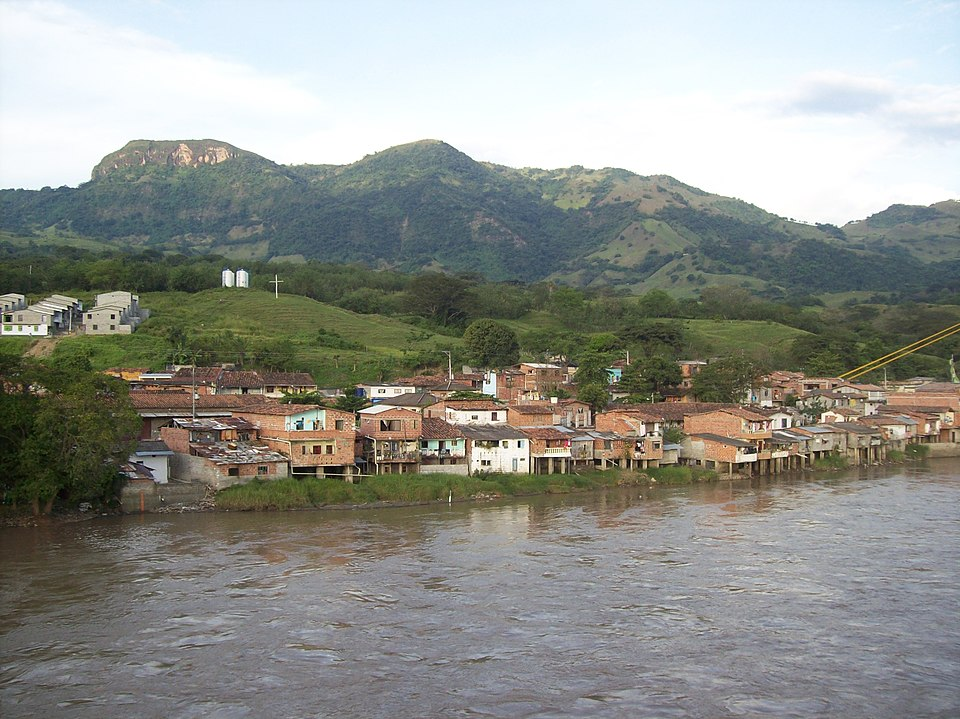

Cultura
La cultura de La Pintada refleja las tradiciones paisas, con fiestas, música y gastronomía típica...

La Pintada, ubicada en el suroeste antioqueño, es reconocida por su riqueza natural y su papel como punto de conexión entre regiones...
La cultura de La Pintada refleja las tradiciones paisas, con fiestas, música y gastronomía típica...
En las festividades se usan trajes típicos como la ruana, el sombrero y el poncho...

Entre los lugares más visitados se encuentran el río Cauca, miradores naturales y parques recreativos...

La bandera del municipio está compuesta por colores que representan la naturaleza y la riqueza cultural...

Platos típicos como la bandeja paisa, arepas y dulces artesanales son parte de la gastronomía local...

La Pintada se encuentra en el suroeste de Antioquia. Puedes verla en Google Maps:
Ver en Google Maps